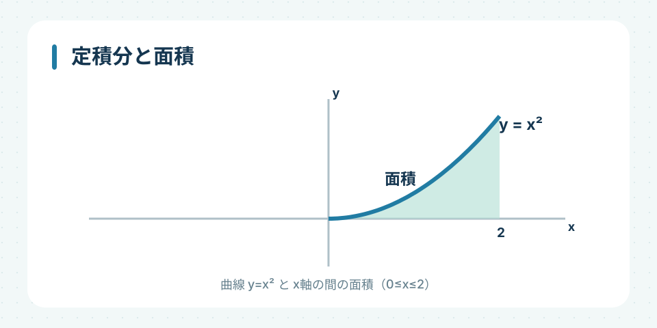

数学 / UNIVERSITY ENTRANCE EXAM
定積分で面積を求める方法｜基本例題
定積分は符号を持つ値です。面積は必ず0以上なので、関数がx軸の上か下かを図で確認してから積分しましょう。
∑
このページで学べること
グラフとx軸に囲まれた面積を計算。要点を読んだら、最後の確認問題で理解度をチェックしましょう。
POINT 01
定積分の計算の基本

F′(x)=f(x) となる関数Fを用いると、∫ₐᵇf(x)dx=F(b)−F(a) です。
例｜x²の0から2までの面積
∫₀² x² dx = [x³/3]₀² = 8/3。
x²は0から2の間でx軸の上なので、積分値がそのまま面積です。POINT 02
x軸の下にある部分は符号を変える
f(x)≤0 の区間では定積分の値は負になります。しかし面積は負ではありません。面積は ∫ₐᵇ |f(x)|dx で考え、符号が切り替わる点で区間を分割します。
例｜y=x−1、0≤x≤2
0〜1はx軸の下で三角形の面積1/2、1〜2は上で1/2。合計は1です。一方、定積分∫₀²(x−1)dxは0になります。
POINT 03
2曲線に囲まれた面積
上の関数を g(x)、下の関数を f(x) とすると、面積は ∫ₐᵇ{g(x)−f(x)}dx です。まず交点を解き、どちらが上かを確認します。
交点 → 上下関係 → 「上−下」を積分。この3段階を毎回書くのがおすすめです。
PRACTICE
確認問題に挑戦！
全3問。答えを考えてから「解答と解説を見る」を押してね。
Q01
∫₀¹ 2x dx の値は？
解答と解説を見る ＋
正解・解答例
1
原始関数x²を0と1で評価して1。
Q02
y=−x、0≤x≤2とx軸に囲まれる面積は？
解答と解説を見る ＋
正解・解答例
2
x軸より下なので積分値−2の符号を反転します。
Q03
y=2とy=x、0≤x≤1に挟まれた面積は？
解答と解説を見る ＋
正解・解答例
3/2
上−下=2−x、∫₀¹(2−x)dx=2−1/2=3/2。
今日のまとめ
定積分は符号付き。面積ではグラフの上下を確認し「上−下」。
ここまで読めたら、ひと区切り。
理解できたら学習済みにチェックして、次の記事へ。
記事について
StudyMasterの無料学習コンテンツです。AIを補助的に用いて作成しています。例題・解答は公開前にご自身でも確認してください。内容に誤りがある場合は、学校の教科書などと照合してください。
公開・更新：2026年11月12日